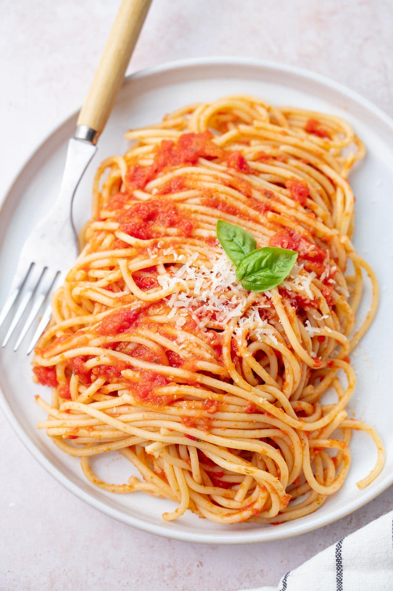

Spaghetti Recipe
Ingredients

- 8 oz (about 225g) of spaghetti
- 2 tablespoons olive oil
- 1 small onion, finely chopped
- 2 cloves garlic, minced
- 1 can (14 oz) crushed tomatoes
- 1 teaspoon dried oregano
- 1 teaspoon dried basil
- Salt and pepper to taste
- Pinch of red pepper flakes (optional, for some heat)
- Freshly grated Parmesan cheese (for serving)
- Fresh basil or parsley (for garnish, optional)
Preperation
- Cook the spaghetti according to the package instructions in a large pot of salted boiling water until al dente. Drain and set aside.
- In a large skillet, heat the olive oil over medium heat. Add the chopped onion and cook until softened, about 3-4 minutes.
- Add the minced garlic to the skillet and sauté for an additional 1-2 minutes until fragrant.
- Pour in the crushed tomatoes, dried oregano, dried basil, salt, pepper, and red pepper flakes (if using). Stir to combine.
- Simmer the tomato sauce for about 15-20 minutes, allowing the flavors to meld and the sauce to thicken.
- Toss the cooked spaghetti into the skillet with the tomato sauce, ensuring the pasta is well-coated.
- Serve the spaghetti on plates, garnished with freshly grated Parmesan cheese and fresh basil or parsley if desired.